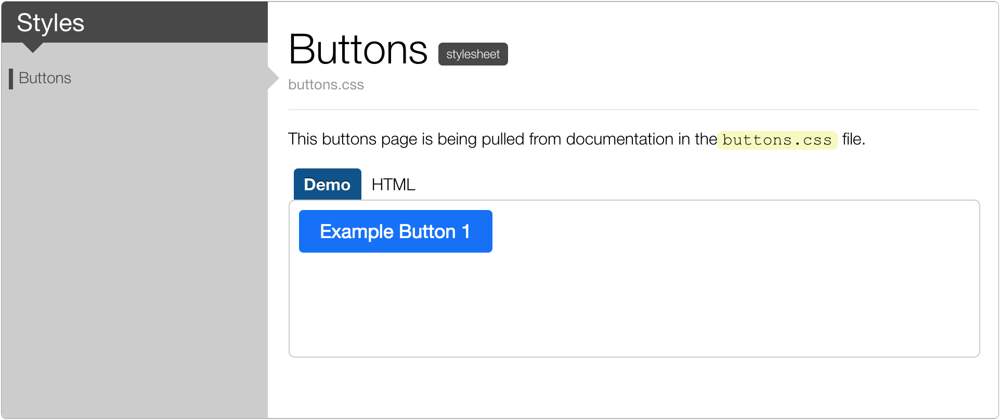
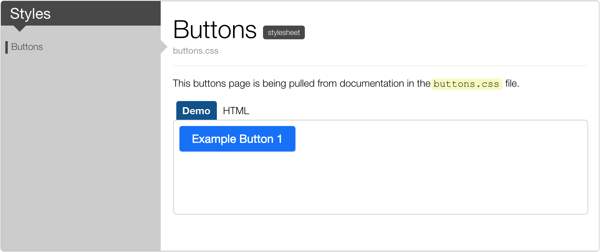

This guide covers how to create, organize and generate a Living Style Guide with DocumentCSS.
Tags Reference
DocumentCSS uses comments in your stylesheets to generate your style guide documentation. Tags are used in conjunction to add structure to it.
Prefixed with the @ symbol, tags tell DocumentCSS that there is additional information about the code. For example the tag @description is used to indicate where the description of a style begins.
Use the following tags to structure your Living Style Guide:
Tag
Use To
@page
Declare a markdown file as a page in your site.
@stylesheet
Declare a stylesheet file as page in your site.
@style
Declare a comment as a style inside of a stylesheet.
@demo
Add an iframe with a demo and html views.
@iframe
Adds a simple iframe.
@parent
Specify the parent of a page or stylesheet.
@group
Specify groups of stylesheets or pages in the sidebar.
Use this tag inside of a markdown file to represent content that doesn't belong to part of the application structure. Anything that you write below this tag will appear as the description of the page.
Arguments
NAME
The unique name of the page. The name is used as a reference for other tags.
TITLE
The title of the page used for display purposes.
Example:
@page logo-standards Logo Standards
The following guidelines will show your how to use the logo.
With this configuration a page will be created called logo-standards.html. The h1 on the page will be Logo Standards:
@stylesheet
Use this tag inside of a stylesheet (CSS, Less, or SCSS) to declare a stylesheet that you want to document in your Living Style Guide. Anything that you write below this tag will appear as the description of the page.
Arguments
NAME
The unique name of the stylesheet. The name is used as a reference for other tags.
TITLE
The title of the page used for display purposes.
Example:
/**
* @stylesheet buttons.css Buttons
*
* There are different button styles that you can use.
**/
This will create a page in the styleguide directory called buttons.css.html:
Like with the @page tag, anything you write below the tag will be used as a description in the page. Note that because you are adding this content inside of a code file you will need to wrap it in a code comment.
@styles
Use this tag inside of a stylesheet that is already using the @stylesheet tag to create a subsection inside of the page and document a set of styles.
Arguments
NAME
The unique name of the style. The name is used as a reference for other tags.
TITLE
The title of the style used for display purposes.
Example:
/**
* @stylesheet buttons.css Buttons
*
* There are different button styles that can be used:
**/
/**
* @styles buttons-sizes Button Sizes
*
* Use button sizes to define the hierarhy between the actions in your page.
**/
This will create the section Button Sizes on the page buttons.css.html:
@demo
Use this tag to add a demonstration of an html file that shows your styles in action. The demo will
render as well an html tab with the markup used for the demo.
Arguments
SRC
The source of the html file.
HEIGHT
The height of the html page. If a height is not provided, the height is determined as the content of the body.
Example:
/**
* @stylesheet buttons.css Buttons
*
* Here's an example of our default button:
*
* @demo demos/buttons/demo.html
**/
This will show the contents of the demo.html under the Buttons section. The html markup will also be rendered on a separate tab:
@iframe
Use this tag to add a demonstration of and html file without showing the markup used for it.
Arguments
SRC
The source of the html file.
HEIGHT
The height of the html page. If a height is not provided, the height is determined as the content of the body.
Example:
/**
* @stylesheet buttons.css Buttons
*
* Here's an example of our default button:
*
* @iframe demos/buttons/demo.html 160
**/
This will show the contents of the demo.html right below the section Forms with a height of 160px. The html markup won't be rendered on a separate tab.
@parent
You can use this tag inside of a markdown file or stylesheet to specify its parent.
Arguments
NAME
The unique name of the parent. The name is used as a reference for other tags.
ORDER
The placement of the children in relation to their siblings. The order starts with 0 and defaults to alphabetical.
Example:
/**
* @stylesheet buttons.css Buttons
* @parent styles
*
* Here's an example of our default button:
*
* @iframe demos/buttons.html
**/
With this configuration the stylesheet buttons.css will show under the Styles section:

@group
You can use this tag to group pages or stylesheets in the sidenav of your Living Style Guide.
Arguments
NAME
The unique name of the group. The name is used as a reference for other tags.
ORDER
The placement of the children in relation to their siblings. The order starts with 0 and defaults to alphabetical.
TITLE
The title that will be shown in the sidebar.
Example:
@page styles Styles
@group styles.colors 0 Colors
@group styles.typography 1 Typography
@group styles.forms-elements 2 Form Elements
This is my style guide.
This will create the groups: Colors, Typography, and Form Elements under the sidebar shown for the Styles section:
Creating a Page
Now that you have a grasp on what tags are used for, let's dive into how to create your Living Style Guide.
The first step is to create a page which will be used as the index of your styleguide. To create this page you can create a file in the styles directory called styles.md, and inside add the tag @page. Your code should look something like this:
@page styles Styles
This is my style guide.
Anything after the line with the tag will be used as text on your page.
Using Markdown
With DocumentCSS you can use markdown to structure semantically your documention. Markdown is great becuase is a lightweight markup that won't clutter the comments inside of your style sheets. For example, if you want to call out a piece of text to be displayed as "code" in markdown you can simply wrap the text in "`". For example:
This Markdown:
`code`
Will display in the generated HTML as:
<code>code</code>
Will display on the page as:
code
Reference this markdown cheatsheet created by gitbub to learn more about how to use markdown in your docs.
Hyperlinking
To create links within your documentation simply use the NAME of the page or stylesheet that has been documented using the tags @page or @stylesheet and wrap it in []. For example:
The following page
@page accesibility Accesibility
Can be hyperlinked like this:
Referece [accesibility] for more details.
For links external to your style guide, use markdown.
Adding images
From time to time you may want to add an image to your style guide. For this use as well markdown.
Documenting a Stylesheet
To document a stylesheet, open an existing stylesheet or create a new one. You can use .CSS, .Less, or .SCSS extensions. Then, at the top of your document add the @stylesheet tag inside of a css comment. As with the page tag, you can add a description right below it. For example:
/**
* @stylesheet buttons.less Buttons
*
* Global style definitions for all button elements.
*/
This will create a page called buttons.less.html in the directory that you chose to generate your documentation in.
Documenting Styles
The next step is to use the @styles tag to organize the styles inside of your stylesheet. For example, inside of your stylesheet for buttons, you may have styles for colors, sizes, and variations. You can use the @styles tag to create sections and document them separately. Besides adding structure to your document, doing this will also allow you to hyperlink directly to that section, as well as to show it on the summary of links at the top of the documentation for that stylesheet.
Here's an example of how this tag can be used:
/**
* @stylesheet buttons.less Buttons
*
* Global style definitions for all button elements.
*
*/
/**
* @styles buttons-sizes Button Sizes 1
*
* There are 3 button sizes that can be used:
*/
btn-small {
...
}
/**
* @styles buttons-colors Button Colors 0
*
* Use the color variations to denote importance of each action type :
*/
btn-success {
...
}
Creating Demos
Creating demos allows you to include markup and css in your Living Style Guide to demonstrate your styles in action. For this, create and HTML file inside of your demos directory as it was indicated under the File Organization section.
Inside of this HTML file add the necessary markup and css classes needed for your demo and link your project stylesheet. For example:
This will render in your Living Style Guide page as:
Note that next to the "demo" tab there is an "HTML". This tab shows any markup inside of your demo, so it's a really nice way of showing your styles in action and how is the markup setup. But if for some reason you don't want to show the markup, you can use instead the tag @iframe which will not render the HTML and the tabs at all. For example:
Have in mind that before your demos can be visible on your Living Style Guide, you will need to copy them into the directory that you chose to generate your documentation in (styleguide in our example). You can do this by simply copying the demo directory inside of it. To automate this task you can use a task manager like grunt.
Since your demos and your overall project will be using the same source styles, your live demos will change whenever your design changes.
Organizing the Docs
DocumentCSS allows you to organize your documentation independently of how your styles are organized. This is very powerful as you can create a custom information achitecture that fit better your particular needs of presenting your Living Style Guide.
Parent-child Relations
To create a hierarchy in your documentation your can use the tag @parent. This tag tells DocumentCSS that your @page or @stylesheet has a "parent", and will make it display under that "parent" on the sidebar. For example:
/**
* @stylesheet checkboxes.css Checkboxes
* @parent forms 2
/**
In this example the Checkboxes page will show up in the sidebar under the Forms section in the 3rd position.
Creating Groups
You can also group pages with headings in the sidebar. For this select the parent page where you want to create the group. Then add the tag @group followed by:
The unique NAME of the group that will be used as reference for other tags,
The ORDER in which you want your group to show on.
The TITLE or heading of your group that will be visible on the page.
This will create the groups: Brainding, Base Elements, and Design Assets under the sidebar shown for the Styles section.
Updating the Top Menu
While the sidebar is generated via the @parent and @group tags, the top menu on your Living Style Guide is hardcoded in the theme files. To change the navigation menu items, you have to edit the theme file layout.mustache.
There are two ways to do this:
Create an entirely new theme by copying the default theme and editing it. This is useful if you want to make a lot of changes to the theme.
Copy and edit only the layout.mustache template file. This is useful if you’re not going to make any other changes to the theme. To do this:
Copy layout.mustache to a folder called templates in your project (like theme/templates).
Make any modifications you have to the layout.mustache file.
Tell DocumentJS to look for this new theme in your documentjs.json like this:
When you generate the site, be sure to use the -f flag to force DocumentJS to re-generate the theme files:
> documentjs -f
Generating the Site
To generate your Living Style Guide site open up a terminal in your project's directory and run:
> ./node_modules/.bin/documentjs
This will generate your site in the styleguide directory.
Simple Command
If you want an easier way to run this command, first install DocumentJS globally (so it can be run anywhere on your computer):
> npm install -g documentjs
Now you can just run this command in any directory with a documentjs.json file:
> documentjs
Viewing Your Site
Now you just need a way to host your generated site from styleguide. If you're not sure how to do this and are on a Windows computer, you'll need to research it on your own. If you are using a Mac or a Linux machine, use a terminal navigate to the styleguide directory and use python to start a server:
> cd styleguide
> python -m SimpleHTTPServer
You should see something like the following:
Serving HTTP on 0.0.0.0 port 8000 ...
Open up a browser and navigate to http://localhost:8000 (if the number above is not 8000, use whatever number you see in your terminal instead). You should see any pages that you have created so far!
Automatically Detecting Changes
If you'd like DocumentJS to rebuild the site every time you make changes, you can use the -w (watch) flag while you're working on the site so you don't have to run the documentjs command every time:
Tags Reference
DocumentCSS uses comments in your stylesheets to generate your style guide documentation. Tags are used in conjunction to add structure to it.
Prefixed with the
@symbol, tags tell DocumentCSS that there is additional information about the code. For example the tag@descriptionis used to indicate where the description of a style begins.Use the following tags to structure your Living Style Guide:
For additional functionality consult the tags full listing.
@page
Use this tag inside of a markdown file to represent content that doesn't belong to part of the application structure. Anything that you write below this tag will appear as the description of the page.
NAMETITLEExample:
With this configuration a page will be created called logo-standards.html. The
h1on the page will be Logo Standards:@stylesheet
Use this tag inside of a stylesheet (CSS, Less, or SCSS) to declare a stylesheet that you want to document in your Living Style Guide. Anything that you write below this tag will appear as the description of the page.
NAMETITLEExample:
This will create a page in the styleguide directory called buttons.css.html:
Like with the
@pagetag, anything you write below the tag will be used as a description in the page. Note that because you are adding this content inside of a code file you will need to wrap it in a code comment.@styles
Use this tag inside of a stylesheet that is already using the
@stylesheettag to create a subsection inside of the page and document a set of styles.NAMETITLEExample:
This will create the section Button Sizes on the page buttons.css.html:
@demo
Use this tag to add a demonstration of an html file that shows your styles in action. The demo will render as well an html tab with the markup used for the demo.
SRCHEIGHTExample:
This will show the contents of the demo.html under the Buttons section. The html markup will also be rendered on a separate tab:
@iframe
Use this tag to add a demonstration of and html file without showing the markup used for it.
SRCHEIGHTExample:
This will show the contents of the demo.html right below the section Forms with a height of 160px. The html markup won't be rendered on a separate tab.
@parent
You can use this tag inside of a markdown file or stylesheet to specify its parent.
NAMEORDERExample:
With this configuration the stylesheet buttons.css will show under the Styles section:

@group
You can use this tag to group pages or stylesheets in the sidenav of your Living Style Guide.
NAMEORDERTITLEExample:
This will create the groups: Colors, Typography, and Form Elements under the sidebar shown for the Styles section:
Creating a Page
Now that you have a grasp on what tags are used for, let's dive into how to create your Living Style Guide.
The first step is to create a page which will be used as the index of your styleguide. To create this page you can create a file in the
stylesdirectory calledstyles.md, and inside add the tag @page. Your code should look something like this:Anything after the line with the tag will be used as text on your page.
Using Markdown
With DocumentCSS you can use markdown to structure semantically your documention. Markdown is great becuase is a lightweight markup that won't clutter the comments inside of your style sheets. For example, if you want to call out a piece of text to be displayed as "code" in markdown you can simply wrap the text in "`". For example:
codeReference this markdown cheatsheet created by gitbub to learn more about how to use markdown in your docs.
Hyperlinking
To create links within your documentation simply use the
NAMEof the page or stylesheet that has been documented using the tags@pageor@stylesheetand wrap it in[]. For example:The following page
Can be hyperlinked like this:
For links external to your style guide, use markdown.
Adding images
From time to time you may want to add an image to your style guide. For this use as well markdown.
Documenting a Stylesheet
To document a stylesheet, open an existing stylesheet or create a new one. You can use .CSS, .Less, or .SCSS extensions. Then, at the top of your document add the @stylesheet tag inside of a css comment. As with the page tag, you can add a description right below it. For example:
This will create a page called
buttons.less.htmlin the directory that you chose to generate your documentation in.Documenting Styles
The next step is to use the @styles tag to organize the styles inside of your stylesheet. For example, inside of your stylesheet for buttons, you may have styles for colors, sizes, and variations. You can use the
@stylestag to create sections and document them separately. Besides adding structure to your document, doing this will also allow you to hyperlink directly to that section, as well as to show it on the summary of links at the top of the documentation for that stylesheet.Here's an example of how this tag can be used:
Creating Demos
Creating demos allows you to include markup and css in your Living Style Guide to demonstrate your styles in action. For this, create and HTML file inside of your
demosdirectory as it was indicated under the File Organization section.Inside of this HTML file add the necessary markup and css classes needed for your demo and link your project stylesheet. For example:
Then, link this demo to your documentation using the @demo tag:
This will render in your Living Style Guide page as:
Note that next to the "demo" tab there is an "HTML". This tab shows any markup inside of your demo, so it's a really nice way of showing your styles in action and how is the markup setup. But if for some reason you don't want to show the markup, you can use instead the tag @iframe which will not render the HTML and the tabs at all. For example:
Will render in your Living Style Guide page as:
Have in mind that before your demos can be visible on your Living Style Guide, you will need to copy them into the directory that you chose to generate your documentation in (styleguidein our example). You can do this by simply copying thedemodirectory inside of it. To automate this task you can use a task manager like grunt.Organizing the Docs
DocumentCSS allows you to organize your documentation independently of how your styles are organized. This is very powerful as you can create a custom information achitecture that fit better your particular needs of presenting your Living Style Guide.
Parent-child Relations
To create a hierarchy in your documentation your can use the tag @parent. This tag tells DocumentCSS that your
@pageor@stylesheethas a "parent", and will make it display under that "parent" on the sidebar. For example:In this example the Checkboxes page will show up in the sidebar under the Forms section in the 3rd position.
Creating Groups
You can also group pages with headings in the sidebar. For this select the parent page where you want to create the group. Then add the tag @group followed by:
NAMEof the group that will be used as reference for other tags,ORDERin which you want your group to show on.TITLEor heading of your group that will be visible on the page.Example:
This will create the groups: Brainding, Base Elements, and Design Assets under the sidebar shown for the Styles section.
Updating the Top Menu
While the sidebar is generated via the
@parentand@grouptags, the top menu on your Living Style Guide is hardcoded in the theme files. To change the navigation menu items, you have to edit the theme filelayout.mustache.There are two ways to do this:
layout.mustachetemplate file. This is useful if you’re not going to make any other changes to the theme. To do this:layout.mustacheto a folder calledtemplatesin your project (liketheme/templates).layout.mustachefile.documentjs.jsonlike this:-fflag to force DocumentJS to re-generate the theme files:Generating the Site
To generate your Living Style Guide site open up a terminal in your project's directory and run:
This will generate your site in the
styleguidedirectory.Simple Command
If you want an easier way to run this command, first install DocumentJS globally (so it can be run anywhere on your computer):
Now you can just run this command in any directory with a
documentjs.jsonfile:Viewing Your Site
Now you just need a way to host your generated site from
styleguide. If you're not sure how to do this and are on a Windows computer, you'll need to research it on your own. If you are using a Mac or a Linux machine, use a terminal navigate to thestyleguidedirectory and use python to start a server:You should see something like the following:
Open up a browser and navigate to
http://localhost:8000(if the number above is not 8000, use whatever number you see in your terminal instead). You should see any pages that you have created so far!Automatically Detecting Changes
If you'd like DocumentJS to rebuild the site every time you make changes, you can use the
-w(watch) flag while you're working on the site so you don't have to run thedocumentjscommand every time:Continue to the next guide:
> Customizing DocumentCSS.